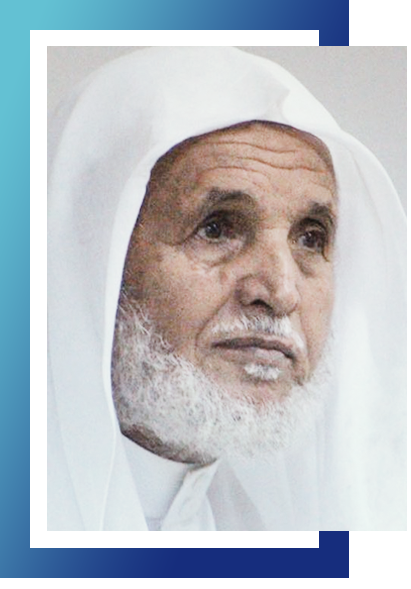

Speech of the General Director of Schools
Abdul Majeed bin Ahmed Al-Zahrani
Praise be to God, Lord of the worlds, and may blessings and peace be upon our Prophet Muhammad and upon all his family and companions
Al-Taawun Private Schools began its first steps in the field of education more than twenty-three years ago after it defined its vision towards a distinguished education in an educational and educational environment that reaches the knowledge society in light of our Islamic values and constants and through this long march of nearly a quarter of a century, it strives to achieve This vision and its practice are goals that are aware of the greatness of trust and sense their responsibility to build a righteous generation proud of their belonging to their religion, values and homeland,
This march is led by a group of educational leaders in its three departments and a group of qualified teachers and administrators,
This made these schools, praise be to God, at the forefront of distinguished edifices not only at the level of Jeddah, but also at the level of the Kingdom, where they achieved many successes and advanced centers in various educational and educational activities and came out to the homeland a group of distinguished learners in various disciplines who are today good girls and arms that contribute to building The country's revival and progress